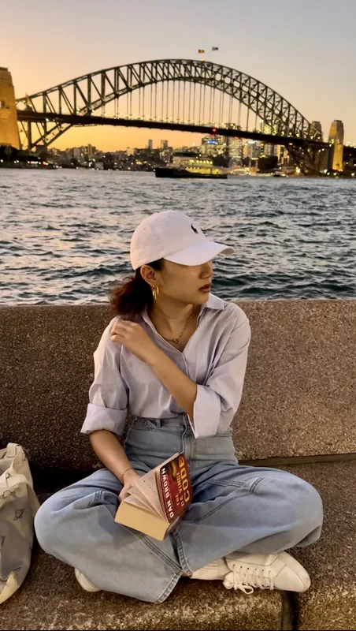
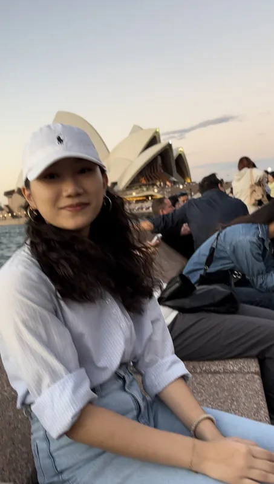

不當光源，也可以照亮自己的人生
高中修「非虛構寫作與人物專訪」時，我練習採訪一位曾赴丹麥留學的同學，寫成這篇報導文學。前半是作品本身，後半是這門課的學習歷程：我怎麼選題、怎麼處理逐字稿，以及寫完之後對「寫作」這件事的新理解。
報導文學
從台灣到丹麥，再從丹麥即將啟程往澳洲，她彷彿是一位旅人，不只是行走於國家間，也漫步在文化與思想的交會點上。在她的眼中，世界從來不是單調的一維視角，而是一個等待被探索的多維空間。她走得慢、穿得簡，像希臘海岸邊的一道潔白的太陽光，總是靜靜地出現，從不喧嘩，但也從不缺席。
好奇，是理解世界的開始
她猶記童年時，那總是對於世界的探索欲。一本書，打開的不只是紙張，還有另一個世界。她常讀歷史，尤其是有關於中國史與世界史，同時，也愛看金庸小說。書頁裡的英雄與凡人、過去與未來，逐漸在她心中形塑出對世界的理解，也建立了她的價值觀。閱讀，使她學會換位思考，敏銳地感受他人情緒。這種能力，也成為了她日後與世界交流的基石。

她學會用語言在靜默中搭橋，而不是舉旗
留學丹麥的一年，成了她生命中一場深刻的洗禮。她記得丹麥人緩慢卻高效的生活步調，記得與來自世界各地學生相處的每個片段，也記得那天在梵蒂岡，自己侃侃而談天使雕像的模樣。於是，她開始學著放慢腳步——在森林旁散步成為她的日常，也是一種情緒與思緒的安置。她的穿著總不帶多餘的裝飾，總讓人聯想到素色與自然的質地。她走路時步伐輕盈，總像在風裡留白一段靜默，融入場景卻不模糊她的存在。
更重要的是，在丹麥，她認識了來自各地，像是義大利、法國、阿根廷、愛沙尼亞的交換學生。文化差異有時會讓交流停頓，但也因此，她學會了傾聽與分享。一次次的對話中，她看到了各種不同的世界觀，也更清楚地看見自己在文化之中的定位。
不是要拯救誰，只是不願假裝沒看見
在台期間，她和母親常去原住民部落做志工，捐贈樂器並教小孩唱歌。她說：「我們可以選擇想學的東西，但他們常只能靠外來的老師或有限的教材。」她不是在批評，而是在說明那樣的落差有多現實，也有多令人無力。
她記得有些孩子後來考上了南藝大，那不是奇蹟，是一點一滴堆出來的可能性。「如果沒有這些資源，他們可能沒機會學樂器。」她的語氣平靜，卻讓人聽得出內心的在乎。這樣的故事，讓她更堅定地相信：教育的不同，真的會改變一個人能看見的世界範圍。
她不常說夢想，但做的每件小事，都像是在為一種不那麼殘酷的未來鋪路，哪怕只是減少一點不公平、多一點選擇的可能。
溫柔，從不代表軟弱與放任
在丹麥，提問是一種被鼓勵的習慣，質疑不是冒犯，而是一種思考的展現。這樣的文化，深深刻進了她的骨子裡，也成了她帶回台灣教室的習慣。她不再習慣沉默接受，在每一次課堂的對話裡，她學著用一種不傷人的方式去說「我有不同的想法」。
她曾經因為數學老師的教學方式讓全班感到困惑與不滿，主動與同學一起向校長反映，最終促成了課堂的調整與改善。這不是為了反抗，而是為了讓學習真正有意義。她相信，真正的溫柔不是順從，而是帶著尊重提出問題，在關係裡創造更清明的空間。
微小的時刻，真實的她
她的日常裡，總有一些靜謐而堅定的儀式。彈奏一曲琴音、寫下三件值得欣賞自己的小事、聽一首能讓心緒沉靜下來的爵士樂或古典旋律——這些都是她與自己的對話。她不需要喧鬧來證明存在，而是在每個微小的片刻裡慢慢修補、緩緩堆疊出一種內在的力量。
她不是那種在聚光燈下能立刻發光的人，比起熱鬧的交際，她更擅長與安靜共處。她像一個在角落等待日光灑落的小宇宙，高冷，但不拒人於千里；安靜，卻總是溫柔地準備著回應他人的靠近。
她已經在路上，沒有回頭的理由
她即將前往澳洲，修讀法律與心理雙學位。「法律跟生活有關，心理跟人有關，」她說，「我期待它們能相輔相成。」那語氣就像她總是思考一件事的方式，不急不躁，不是為了討好世界，而是想真正弄懂它運作的邏輯。法律，是她想理解這個社會的方法；心理，是她想靠近人的入口。她選這兩條路，不是為了變成誰，而是為了靠近自己真正在意的事。
法律跟生活有關，心理跟人有關，
我期待它們能相輔相成。

她說自己對模擬法庭充滿期待，因為那讓她更真實地接近法律的運作；也想參與辯論賽，用語言與邏輯磨練判斷力。她不是奔跑著進入這一切，而是一步步踏實地靠近，像是走進一場預先理解過的長旅。
而那些不屬於課堂的夢，也沒有被她遺忘。她想去巴黎，親眼看看那些只存在於書中與歷史裡的風暴與革命；也想去紐約，體驗那座城市怎麼讓錯誤與差異都有位置。她說不急，因為她不是為了證明什麼才出發的。她只是在靠近她認為值得靠近的世界。她不是那種鋒芒畢露的人，卻總讓人無法忽視她的存在。她像一顆深夜裡看不見光源卻照得見路的星辰，靜靜地指引自己，也為別人留下一點點亮度。站在世界的交會點上，她不喧嘩、不催促，以自己溫柔而堅定的步伐，慢慢向更寬廣的未來行去，眼中帶著不疾不徐的光。
原文刊於 episode.cc（2025.06）
學習歷程
113-2 學期 · 台北市數位實驗高級中等學校
這門課在做什麼
這門課以非虛構寫作為主軸，內容涵蓋文本閱讀、人物觀察、訪談實作、逐字稿整理與內容編輯。透過這些過程，我們學習如何從真實素材中辨識重點、統整訊息，進而形成具邏輯性與敘事感的文字。課程引導我們理解語氣選擇、段落結構與素材呈現之間的關係，使書寫不僅止於紀錄事實，而能傳達理解、觀點與價值立場。
本課程的核心任務之一，是完成一篇期末人物專訪，將對他人的觀察與對話轉化為非虛構敘事。整體課程設計穿插閱讀與寫作，包括作家作品分析、人物描寫、景物摹寫、小組討論、訪綱設計，以及最終的訪談撰寫與作品排版。透過這些練習，我們逐步學習如何在書寫中重組現實、處理素材，並建立個人敘事風格與判斷能力。
為什麼選這門課
選修這門課時，我特別注意到課綱中對寫作練習的安排，也因此認為這門課有機會幫助我在書寫表達上更進一步。尤其考量到學測中國文寫作的比重相對較高，我希望藉由這門課強化自己對語言的掌握與運用能力。即使單純從應試角度出發，我也相信持續練習寫作能讓我在文字組織與語感上更敏銳。
除了應試需求，我平時也會撰寫小論文與科展說明書，這些經驗讓我意識到文字表達在邏輯與溝通上的重要性。非虛構寫作不只是紀錄經驗，更是一種能同時保有情感與清晰結構的敘事方式。比起完成一份作業，我更希望透過這門課系統性地練習語氣選擇與段落安排，讓自己的書寫更有層次，也更貼近讀者的理解節奏。
從課堂練習到人物專訪
這篇作品來自這門課的期末人物專訪，是一項從前期訪談規劃到後期撰寫與編輯皆須獨立完成的任務。課堂安排中，我們經歷了逐字稿整理、片段剪接、語氣模仿與段落組織等多階段練習，這些過程逐步構成我完成作品的基礎。在實作中，我不僅是紀錄受訪者的經驗，更試圖透過敘事呈現她的觀點與性格特質。
課程中我們閱讀了多篇非虛構文本，也討論過不同作者如何處理情感、觀點與書寫位置。這些閱讀與討論成為我創作時的重要參照，幫助我判斷素材該如何保留、語氣如何選擇，以及哪些地方可以留給讀者自行進入。寫作的每個決定，包括從哪裡開場、是否加入旁白、以及在描述與解釋之間取得怎樣的距離，都是在一次次課堂討論與模仿練習後逐漸形成的選擇。
文章聚焦於她的文化經歷與身份認同轉變，內容涵蓋童年記憶、語言經驗、家庭背景與當下對自我定位的理解。我以逐字稿作為主要素材來源，搭配個人旁白與情緒補述，完成這篇非虛構作品。在編排上，我透過插圖與段落設計調整閱讀節奏，讓整體呈現出較具流動感與閱讀層次的形式，而不是單純的訪談紀錄。整個寫作過程不只是把內容整理出來，更像是一種重新組織經驗、試著讓一段對話轉化為可以讓人慢慢讀進去的文字。
在這份期末人物專訪裡，我試著把課堂中的每一次練習、閱讀與討論，轉換成自己可以使用的語言與敘事方式。從選材、語氣到結構安排，都是在過程中一點一點摸索出來的。這份作品的完成，不只是為了回應課程要求，更是我開始建立自己寫作方法的一個起點。
標題的由來
標題〈不當光源，也可以照亮自己的人生〉，呼應我對她在模糊與轉變之中的自我認識狀態所產生的理解與感受。對我來說，「光源」象徵的是一種明確、被依靠的角色，但她的人生經驗恰恰相反——不是站在舞台正中央，而是在不同文化與語言之間，摸索著自己的位置。
這個標題不是對她的讚美，而是我對她的某種理解：她可能還不確定自己能夠成為什麼樣的人，但她已有意識地在過生活、與世界互動，這本身就是一種照亮。這樣的狀態也讓我重新思考，書寫不一定要把人物講清楚講完整，有時候留下一點模糊，反而能更接近她真正的樣子。
交換日記：三篇階段性習作
除了期末作品外，課堂中也有多篇階段性創作，作為交換日記的非同步作業。這些作品雖然篇幅不長，但讓我練習如何用自己的語言去貼近經驗、抓住觀察到的細節，也為後來的人物專訪打下基礎。
〈路上觀察日記〉
透過觀察日常中不認識的人，練習如何根據細節描寫人物，並試著推敲人物狀態與動機，是我第一次嘗試將生活經驗轉化為敘事片段。
今天放學吃完晚餐回家的路上，我刻意在搭捷運時，細觀察那些同樣在通勤的路人。在人群中，我注意到一位穿著深藍色西裝的上班族。他手裡提著一個黑色公事包，臉上帶著一絲疲憊，但眼神卻很堅定。他那梳理得一絲不苟的黑髮結合著髮膠，在夕陽的餘暉映照下露出細微的光澤。
他站在車門邊，雙手緊緊地抓住扶手，身體隨著捷運的行駛微微搖晃。他的目光穿過帶有水漬的捷運車窗，望向窗外那片被大樓夾住的火燒雲。
一陣子後他的眼睛轉向手機螢幕，手指快速地滑動著，似乎在處理著重要的工作。我注意到，他的眉頭不時地皺起，嘴角也微微地向下彎曲，看起來像遇到什麼難題似的。
捷運到站了，車門打開，人群湧動。他沒有立刻下車，而是抬起頭，環顧了一下四周，似乎在確認著什麼。當他看到站牌上的站名時，他才鬆了一口氣，快步地走下了車。
〈靈魂的鄉愁〉
描寫童年記憶中的巷口與外公家的老屋，練習透過鏡頭移動與空間細節堆疊出情感氛圍。這是我第一次嘗試將場所轉化為承載記憶的敘事素材，也開始意識到空間書寫中的節奏與層次安排技巧。
從外婆家門口的小巷走出來，走個鐮刀形狀的小路再經過幾戶人家，就能看到那狹小的巷口，像一個巨大灶台的紅磚縫。鏡頭拉遠，天空是秋日午後的那種淡藍，帶著一點懶散的雲，風吹過，捲起路邊芒草細細的沙沙聲。小路兩旁是低矮的土牆，有些地方長了青苔，有些地方露出斑駁的黃土，像老人臉上的皺紋。走近巷口，視線漸漸收緊，紅磚的縫隙變得清晰起來——那些磚頭被歲月磨得圓潤，顏色不再是新鮮的紅，而是帶著點暗沉的鐵鏽色，縫隙裡塞滿了乾枯的草屑和一兩根頑強的小野花。
再往裡走，推開外公家一扇老舊生鏽的鐵門，門軸吱吱作響，像是老唱片轉動的聲音。屋裡的光線昏暗，只有從窗欞透進來的一道細長陽光。陽光落在斑駁的白牆上，照出一片泛黃的光暈，牆角有幾道裂縫，像蜘蛛網似的爬開來。屋子正中擺著一張方木桌，桌面被磨得坑坑窪窪，邊緣染著一圈深褐色的油漬，那是外公從小生活到大留下的痕跡。
〈微小的嘆息〉
書寫一段在我生病時，收到一位好心同學遞藥的經驗。這篇作品讓我練習在事件書寫中處理個人情緒，同時建立敘事節奏與句子層次，並開始思考敘事角度的選擇。
有時候卡在喉嚨的，不是痰，也不是話，更不是哭，而是期中檢核會不會被預警的那種慌張和焦慮。像一顆不規則的石頭，卡在某個你摸不著的地方，吞也吞不下去，即便使用 0.9% 的無碘鹽水溶液衝也衝不掉。
那天我感冒得不輕，昏昏沉沉地坐在教室裡。你委託同學過來，沒說什麼，只是默默地給我一包藥。我也沒問，只機械地接過來，吞下去，像完成一個簡單指令一樣。當時沒覺得特別，只覺得你怎麼突然這樣關心我的症狀。
直到很久以後，像是某種遲來的震盪，我才驀然意識到那舉動的溫柔。有點慢半拍地，我傳了訊息給你：「你很暖欸。」你只回了一句：「我看你不舒服，上課也上不下去啊。」就是那一句，不多不少，剛好。像是我們之間沒有說出口的情緒，終於有了出口。不是什麼轟轟烈烈的感動，但在那個瞬間，我接受了，你理解了，我說出了，你回應了。這些微小的片刻，一點點地拼出一種默契，好像我們之間，悄悄完成了一件什麼。
訪談現場與逐字稿
從場地條件到後續逐字稿的處理，這次專訪讓我經歷了一次完整的實作挑戰。受訪當天的場地是在一間咖啡廳，環境中有不少雜音，導致我在錄音時無法清楚辨識受訪者的每一句話。為了避免遺漏關鍵內容，我一邊進行訪談，一邊將訪綱複製貼在筆記中，按照訪綱逐題推進，也同步記下她回應中的關鍵字與語句。我本身有參加過校內的公民行動課程，曾經在田野實作中接觸到訪談流程，因此對於如何抓問題核心與紀錄重點已有一定程度的經驗，這次也運用在實際操作中。
由於現場錄音品質有限，我決定使用 GoodTape 這個 AI 工具，協助將完整的訪談錄影檔轉成初步逐字稿。在取得文字檔之後，我先使用 AI 工具進行格式優化，初步修正明顯的錯字與結構混亂，然後再手動反覆聆聽原始錄音，補上未識別或模糊不清的部分。對於系統辨識不出的關鍵語句，我會根據前後語境進行合理推測，並在稿件完成後將最終版本提供給受訪者本人確認，確保內容準確不失真。
逐字稿處理過程其實很花時間，從整理重點、對照語句到確認表達是否貼近原意，每一步都需要不斷來回調整。我在這些步驟中學會怎麼從大量素材中慢慢理出頭緒，也更注意到訪談中的語言其實不只是內容，更包含情緒、語氣與停頓。例如一個詞的精確選擇、停頓的節奏，可能決定讀者理解作品的方式，也會影響整篇文字呈現出來的流暢度與真實感。
學習反思
我開始理解語文是一種工具，不只是傳達資訊，也包含著理解與整理的功能。在這門課裡，我不斷經歷「還沒準備好就要開始寫」的狀態，這種剛剛好的壓力讓我學會了如何先動手處理素材，再慢慢建立出自己的判斷與觀點。特別是在處理逐字稿與人物語氣時，我發現自己其實是透過語言在嘗試靠近一個人的狀態，而這個「靠近」不只是記錄，更像是在建構我與對方之間的理解結構。
這樣的靠近讓我重新理解了「寫作」這件事。它不只是為了把事情講清楚，而是關於我願不願意放慢速度、承認模糊、重新排列語句與想法。我也逐漸習慣在書寫中保留空間，讓某些不確定的情緒、不需要急著定義的語言，有位置可以存在。這讓我開始從語氣與句型的選擇中，思考「我希望讀者如何進入這段敘事」而不只是「我要怎麼講這個故事」。
語言不只是輸出，而是一種設計過程。
這樣的過程讓我意識到，其實我在處理非虛構寫作的方式，跟我平常讀理工科知識時的策略很像──不是一開始就能看出結論，而是要先把結構搭起來、慢慢釐清資訊彼此的關係，問題和觀點才會自然顯現。我也發現，我在處理文字的時候其實用的是一種結構與邏輯意識，而不是單純的文學語感胡亂拼湊。
這門課讓我體會到，語言與寫作不是學科之外的附加技能，而是貫穿所有學習的一種基本能力。當我開始將這些練習延伸到其他科目時，我能更明確地感受到自己不只是要「說明內容」，而是需要「讓人理解內容」。語言不只是輸出，而是一種設計過程──設計出讓他人進入的方式，也設計出我與這個世界互動的距離與角度。
這樣的學習歷程讓我更確定，語言將會是我日後在各種領域中都會持續使用的工具，不論是整理思緒、建構模型，還是傳達觀點，它都能成為我理解他人與表達自己的方法之一。